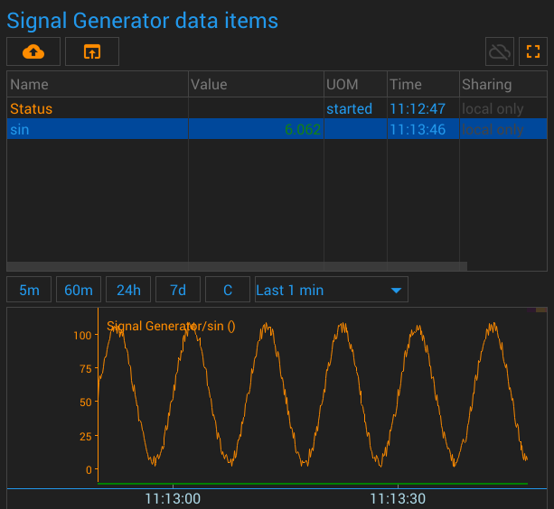
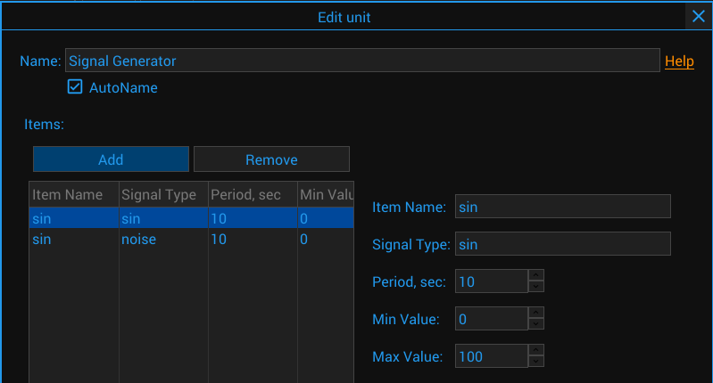

{#header.html#}

{%title=Gazer - Unit - Signal Generator%}
{%description=Gazer - Unit for generation values %}

<h1 class="sensor_name">Signal Generator Unit</h1>

<h2>Description</h2>
<div class="sensor_description">
    The unit allows you to generate the signal you want. Several types of signals can be mixed.
</div>

<h2>Parameters</h2>
<div class="sensor_parameters">
    <div class="sensor_parameter">
        <div class="sensor_parameter_name">
            items
        </div>
        <div class="sensor_parameter_description">
            allowed types: sin, sinsin, tan, meander, noise.
        </div>
    </div>
</div>

<h2>Data Items</h2>
<div>the unit creates the elements that you specified in the configuration</div>

<h2>Pictures</h2>
<div style="text-align: center">Screenshot</div>

<div style="text-align: center">Configuration</div>


<div class="dark_block" style="text-align: center; margin: 10px;">
    <a href="https://github.com/gazercloud/gazernode/tree/main/system/units/general/unit_signal_generator" target="_blank">Source code of the unit</a>
</div>

{#bottom.html#}
